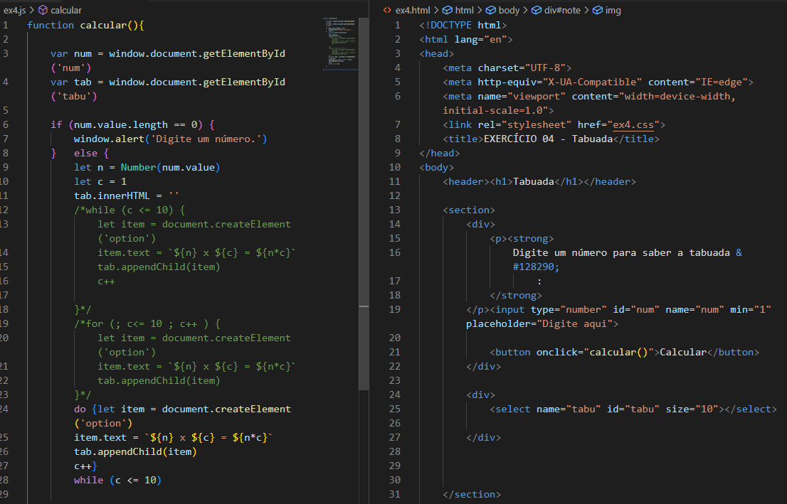
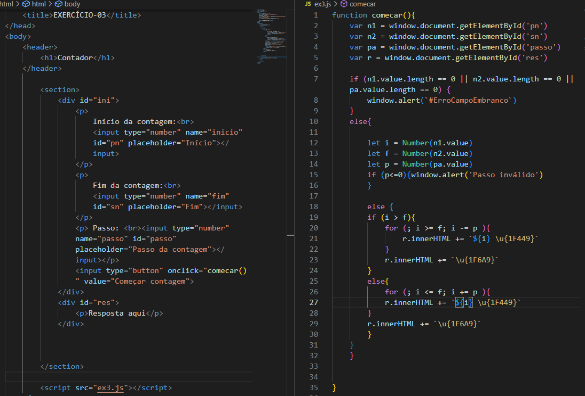

Para validar campos em branco, lembre-se de utilizar o comando "var.value.length == 0".
Número como StringPara que um número (ou uma variável) seja reconhecida pelo js como um número, devemos adicionar "Number(var.value)" ao código.
Adicionando emojisO código para adicionar emojis no js é normalmente "U+1F449 ". Devemos alterá-lo para "\u{1F449}", lembrando de usá-lo sempre dentro da tamplate string ``.
SelectUsamos essa tag para criar uma lista. É necessário criar elementos (outras tags) "option" dentro do select.
Códigos utilizados abaixo:   Estudar a estrutura de repetição "FOR".